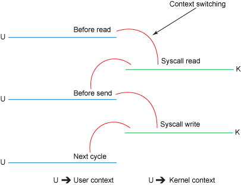

Copiando arquivos em linguagem C
Analisa-se algumas formas de copiar um arquivo na linguagem C, com mmap, read/write e sendfile, buscando uma abordagem "zero-copy"

Em uma postagem do twitter, foi colocada a questão de copiar arquivos sem transferir dados pelo user space. Por um acaso eu tinha em minha memória que era possível usar a chamada sendfile() no Linux para isso, e foi o que indiquei. Mas desde então, fico com a questão "como é que ficaria isso" na cabeça, até que comecei a codar.
A promessa é que uma abordagem zero-copy torna o processo mais rápido e menos custoso, pois tudo (ou quase tudo) é feito em espaço de kernel.
E lá fui eu pesquisar. Dentre os textos mais legais, deixo esses dois registrados aqui:
Nessa pesquisa, vi várias pessoas indicando o uso da chamada mmap(), que, aparentemente, é uma abordagem superior pelo simples fato de não ter que se preocupar em ler e escrever o arquivo. Por fim, o sendfile, tradicionalmente usado em sockets, mas que no Linux pode ser usado para transferir arquivos locais.
Não encontrei essa funcionalidade em outros sistema Unix (nem para NetBSD ou Solaris):
Minha história com o a chamada sendfile()
Essa chamada mudou minha vida! Não me lembro muito bem de como eram as configurações mais "nervosas" do apache (trabalhei alguns anos com ele), mas em algum momento de minha carreira, comecei a usar Nginx para criar clusters PHP. Dentre outras coisas, usar a chamada sendfile() para servir arquivos estáticos é uma primeira providência que dá resultados visíveis.
A solução óbvia (ingênua)
O mais simples, em C, é abrir o arquivo, ler e escrever pequenos pedaços, até o fim:
while(0 != (readed = read(from_fd, buffer, block_size))) {
write(to_fd, buffer, readed);
}
O problema nessa abordagem, é que pedimos para o kernel, muitas vezes, um pedaço do arquivo que ele nos retorna, para, muitas vezes, enviarmos para o kernel esses mesmos pedaços para que sejam escritos no arquivo destino.
Essa implementação, com as devidas checagens de erro, pode ser encontrada nesse arquivo: naive.c
A solução média
Tem-se ainda uma abordagem mais aclamada em termos de velocidade e economia de recursos, usando a chamada mmap():
source = mmap(NULL, filesize, PROT_READ, MAP_SHARED, from_fd, 0);
target = mmap(NULL, filesize, PROT_READ|PROT_WRITE, MAP_SHARED, to_fd, 0);
memcpy(target, source, filesize);
A solução topzera!
Finalmente, usando sendfile():
while(offset<filesize) {
sendfile(to_fd, from_fd, &offset, transfer_size);
}
A chamada _ sendfile_ tem uma pegadinha, que eventualmente ela não transfere tudo que foi pedido, e, portanto, é necessário tentar até que tudo seja transferido.
Comparando as abordagens
Em um teste muito simples, comparou-se a cópia de arquivos variando de 3K a 3G, para todas as abordagens, verificando-se o tempo gasto e a quantidade de syscalls usadas, De vinte testes para cada situação, os quartis superior e inferior foram descartados, e então calculada a média dos valores:
naive
| filesize | time | calls |
| -------- | --------- | ------- |
| 3K | 0.043396 | 42 |
| 30K | 0.038677 | 56 |
| 300K | 0.062573 | 190 |
| 3M | 0.120692 | 1542 |
| 30M | 0.717253 | 15064 |
| 300M | 7.583485 | 150285 |
| 3G | 77.759165 | 1502496 |
mmap
| filesize | time | calls |
| -------- | --------- | ------- |
| 3K | 0.041350 | 45 |
| 30K | 0.047594 | 45 |
| 300K | 0.059993 | 45 |
| 3M | 0.099452 | 45 |
| 30M | 0.447214 | 52 |
| 300M | 3.344450 | 124 |
| 3G | 34.680524 | 800 |
sendfile
| filesize | time | calls |
| -------- | --------- | ------- |
| 3K | 0.044158 | 40 |
| 30K | 0.034627 | 40 |
| 300K | 0.035980 | 40 |
| 3M | 0.053271 | 40 |
| 30M | 0.229736 | 50 |
| 300M | 2.336326 | 146 |
| 3G | 22.134009 | 854 |
Tanto na quantidade de chamadas de sistema, como no tempo, usar sendfile é mais performático, embora restrito ao Linux. Usando a abordagem que chamei de naive, tem-se um código portável entre os diversos Unix, e usando o mmap, temos uma ótima solução, também portável.
Há ainda a possibilidade de usar chamadas ioctl para clonar um arquivo, mas isso depende da implementação de cada filesystem. Um exemplo de uso está na implementação do CP da GNU, e chamada splice.
Os programas para esses testes estão nesse repositório do GitHub.